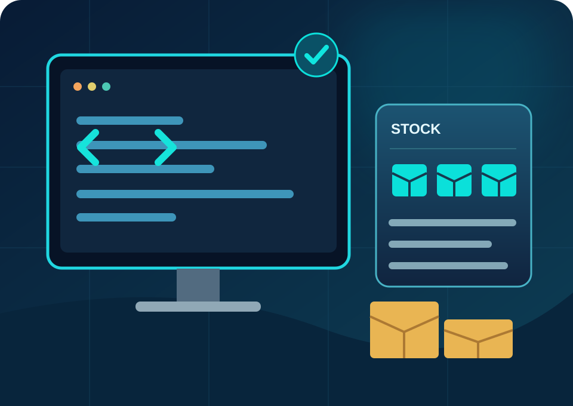

Développeur Web · TWINS
Sites institutionnels, WordPress, Drupal, intégration et maintenance.
Professionnel polyvalent, alliant le développement de solutions web et logicielles à une solide expérience en gestion de stock et logistique. J’apporte des solutions concrètes, digitales et opérationnelles pour optimiser l’organisation et la performance des entreprises.

Deux solutions web conçues pour répondre à des besoins métiers concrets.
 GESTION BTP · REACTChantier Manager ProChantiers, stocks, bons, équipes et finances
GESTION BTP · REACTChantier Manager ProChantiers, stocks, bons, équipes et finances RECRUTEMENT MÉDICAL · REACTHealth ServicePortail de recrutement de professionnels de santé
RECRUTEMENT MÉDICAL · REACTHealth ServicePortail de recrutement de professionnels de santé
Je crée des solutions digitales utiles, avec une connaissance concrète des besoins du terrain.
Développeur web et professionnel de la gestion de stock, j’associe mes compétences en WordPress, Drupal et développement d’applications à mon expérience opérationnelle chez SGTM — Projet WAVE II à Safi.
Développement web, applications métiers et gestion de stock : deux domaines complémentaires au service des entreprises.
Sites institutionnels, WordPress, Drupal, intégration et maintenance.
Personnalisation, fonctionnalités sur mesure, hébergement et optimisation.
Réceptions, bons, inventaires, SAP, Excel/VBA et suivi des flux chantier.
Vous recherchez un développeur web, un magasinier / gestionnaire de stock ou un système de gestion sur mesure ? Échangeons sur vos objectifs et trouvons une solution adaptée.